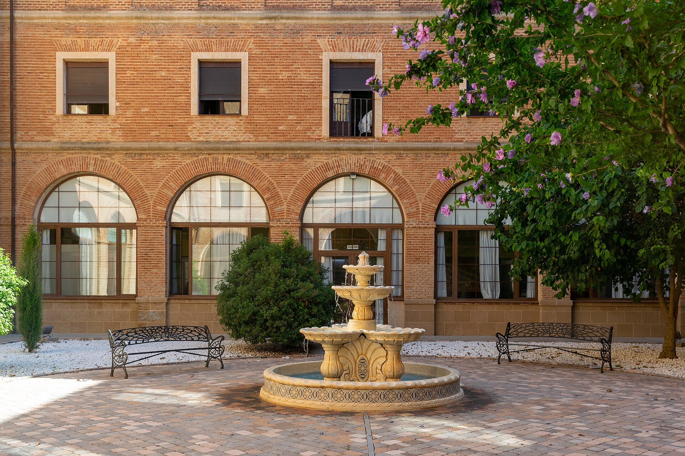

Viernes nublado y con viento
Cielo cubierto todo el día, con máxima de 28 grados y mínima de 17. Sin lluvia a la vista, aunque el viento se dejará notar con rachas cercanas a los 27 km/h.
28° 17°
Foto: L. Vadillo - MaLéPhotoSpain, CC BY-SA 4.0, vía Wikimedia Commons
Ahora en Valderas estamos en 18 grados y despejado, así que la mañana empieza fresca. Pero irá subiendo hasta los 34, con el viento parado y sin nada de lluvia. Mañana cambia la cosa: se nubla y no pasará de 28. Con el calor de hoy, riega a primera hora o al anochecer, que al mediodía no aprovechas el agua.
Los próximos díasCielo cubierto todo el día, con máxima de 28 grados y mínima de 17. Sin lluvia a la vista, aunque el viento se dejará notar con rachas cercanas a los 27 km/h.
28° 17°Seguimos con nubes y termómetros más frescos, entre 14 y 26 grados. La probabilidad de lluvia es testimonial, apenas un 5 por ciento, y el viento afloja un poco.
26° 14°El día más luminoso del fin de semana, casi despejado y con viento flojo de 13 km/h. Máxima de 27 grados y una mínima de 12 que pide algo de abrigo a primera hora.
27° 12°El tiempo cada mañana, las noticias del pueblo, la agenda, alguna historia de aquí y una foto de vez en cuando.
Todavía no hay fotos publicadas de Valderas.
Traspasos, alquiler de locales y de viviendas, aperturas y comercios de Valderas. Todavía no hay anuncios publicados.